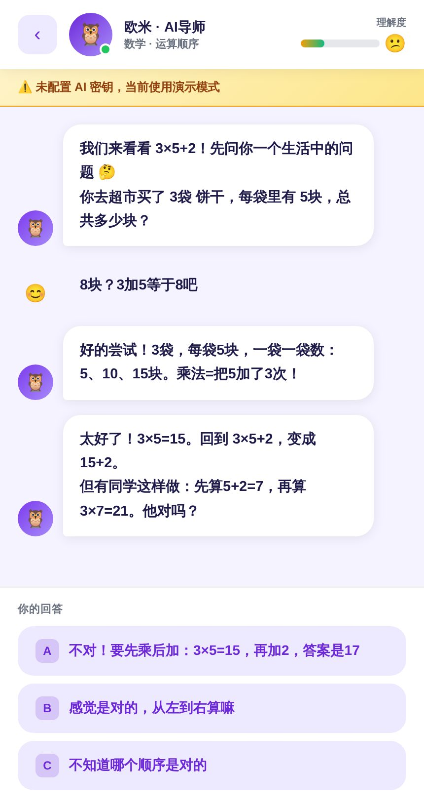
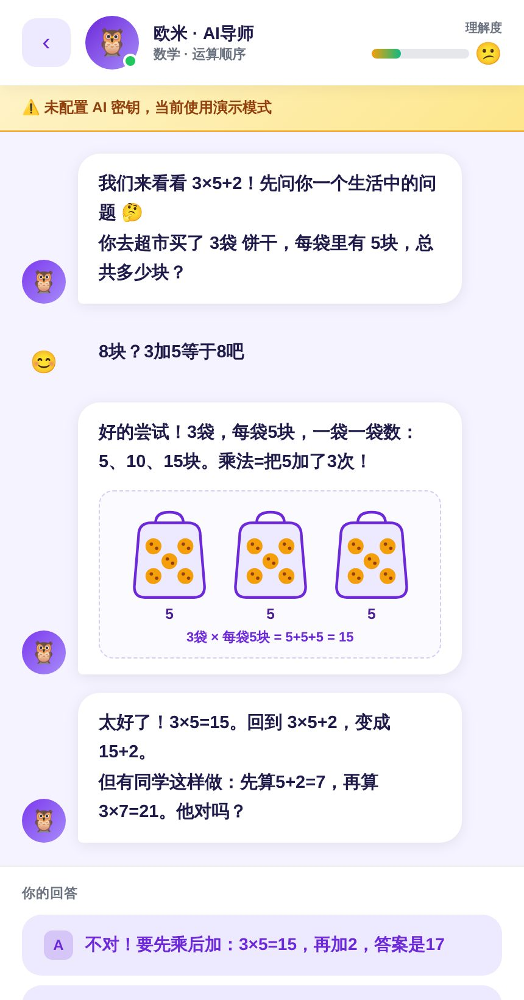
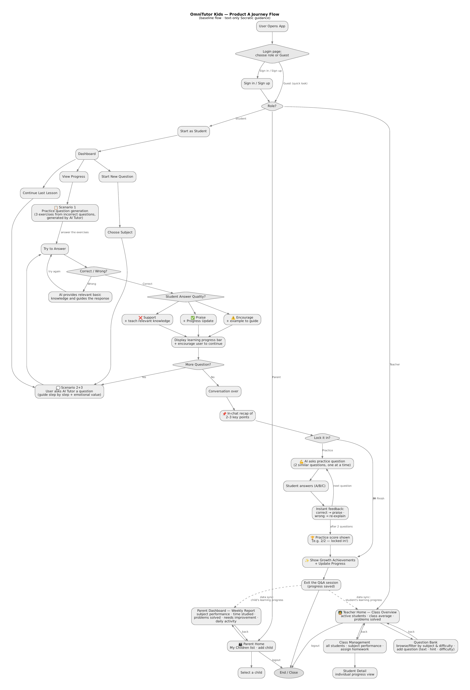
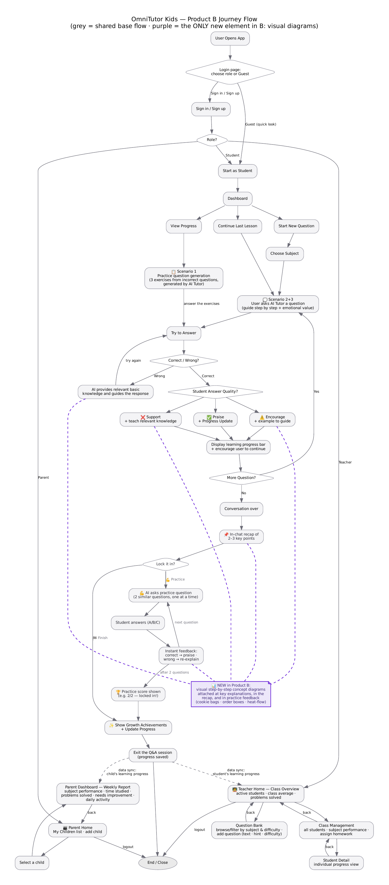
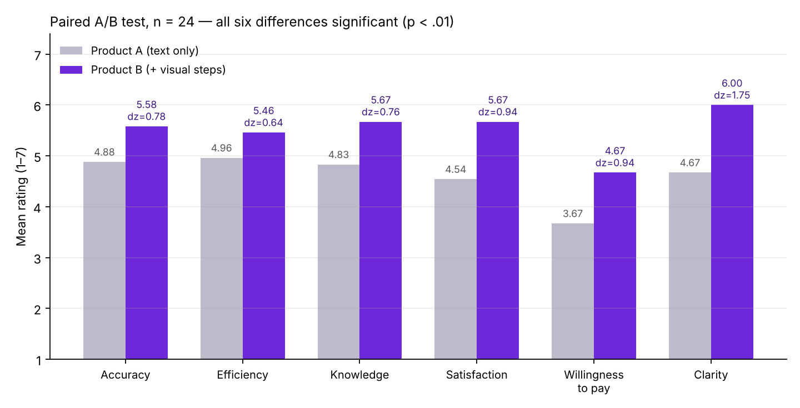

纯文字引导
Product A
苏格拉底式对话、答题反馈、对话结尾小结、巩固练习，全部用文字完成。
打开 Product A → GitHub 镜像版面向 4–6 年级学生的 AI 学习助手：不直接给答案，而是一步步提问、引导孩子自己想出来。我们做了两个版本，只差一个功能，用来验证"讲解里加一张图"是否能让孩子更容易听懂。

苏格拉底式对话、答题反馈、对话结尾小结、巩固练习，全部用文字完成。
打开 Product A → GitHub 镜像版
和 A 完全相同的流程，只是在关键讲解、小结和练习反馈处，加了一张概念图解。
打开 Product B → GitHub 镜像版两版唯一的区别：Product B 在三个讲解节点（举例鼓励、补充教学、答错引导）以及对话小结和练习反馈里，附上一张可视化图解，比如把 3×5 画成"3 袋饼干"，用颜色框标出"先乘后加"。
体验路径：选"跳过登录（访客模式）"→ 数学 → 选例题 3 × 5 + 2 → 开始学习，故意选错一次就能看到图解。也可以用学生、教师、家长三种演示账号进入。
两版共用同一套用户旅程：登录选角色 → 学生仪表盘 → 提问或练习 → 答题反馈 → 小结 → 巩固练习 → 进度同步到家长和教师端。



UNSW 产品分析课程 4 人小组项目。网页为演示模式（脚本对话）；在应用右上角填入自己的 Gemini API 密钥后可切换为真实 AI 对话。